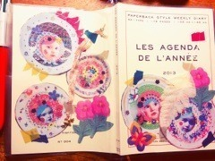

| 2013/01 09 Wed | 339回目*marika |
今日はいつも通り学校でした。
廊下寒過ぎるんだがっ！
体育寒過ぎるんだがっ！
体育の後の授業、
手がかじかんで上手く字書けない

付けても見えないあったかい
顔面マスクと手袋
誰か開発してくれないかなー><

この前載っけたスケジュール帳！
どうしちゃったのか。
ついぺたぺた貼ってしまいました。
なんでもかんでも
色をつけたくなるみたい。
**********
 メンバー内って年賀状とか
メンバー内って年賀状とか
出したの？それともメール？
 メールしたよー
メールしたよー

0時になったとたんみんなで
あけおめあけおめあけおめって笑
コメントしてるけど
これってもうすでに
まりっ会に入ってる？笑
「まりっ会」正会員の基準って
何ですか(^o^;)？
気のきいたコメント出来ないし
他のメンバーを推してるけど
僕はまりっ会だと思う？
まりっか推しの方はまりっ会です。
入会手続きなんて必要ないですよ

他推しがいても、まりっかも
推してくださってるならまりっ会！
正会員...？
そんなこと考えてなかった。
んーじゃあまりっか単推しは
正会員さん

...でもそんな設定
こだわってないのでゆるくね。←
今一番好きな髪型って何？
髪切ったし、ストレートで
毛先内側にくるんてしたのが
いいかなー。楽だし♪
どこのブランドの服が好き？
ちょっと変わったかも。
あちゃちゅむ
ライチ
bulle de savon
CHILDWOMAN
BEAMSBOY
JOURNAL STANDARD
franche lippee
ParAvion
RNA-N
A-net系もすきです。
最近はカジュアルだけどレトロで
ちょっと上品な服にはまってます

好きというより憧れかなー
朝どうやって起きてる⁇
ケータイのアラーム最大音量で笑
今年の抱負は何？
ちゃんと言ってなかった><
外見も内面も美しくなりたい。
あと、自分のやりたいことが
できたらいいな。
とにかくいろいろなことに挑戦する！
万理華らしく＊
好きな曲と、映画はなんですか?
よく聴くのは東京事変、アジカン。
映画は告白がすきです。
しろくまりっくま先輩から
年賀状届いた?
来なかった...
冬眠してるんだよ←
矯正したことありますか？
ない><
春の七草は全部言える？
セリ、ナズナ、ゴギョウ、ハコベラ
ホトケノザ、スズナ、スズシロ
...どや

冬は手荒れがツラいんだけど、
オススメのケアの方法ある？
やっぱりハンドクリームが
いいじゃないかな。辛いですよね; ;
お年玉は何に使うの？
この前の買い物で半分
使ってしまったので...
半分は貯金してます。
**********
☆☆☆
第２７回
日本ゴールドディスク大賞で
ニュー・アーティスト・オブ・ザ・イヤーの邦楽部門で
乃木坂46が受賞しました！
ありがとうございました。
☆☆☆
せいたんにからかわれるっち
ばかにすんなっち
でもせいたんらぶたん


今せいたんの携帯おかしいらしく、
ブログの更新ができないみたいです><
今日はせいたん
ブログ更新されないよー！
さびしいのお; ;
更新待ってるぞー

では明日も頑張りまりっか
＊＊＊
遅くなってしまったけど...
12月お誕生日の方、
おめでとうございました！
＊＊＊
まりか
コメント(298)
2013/01/09 20:48